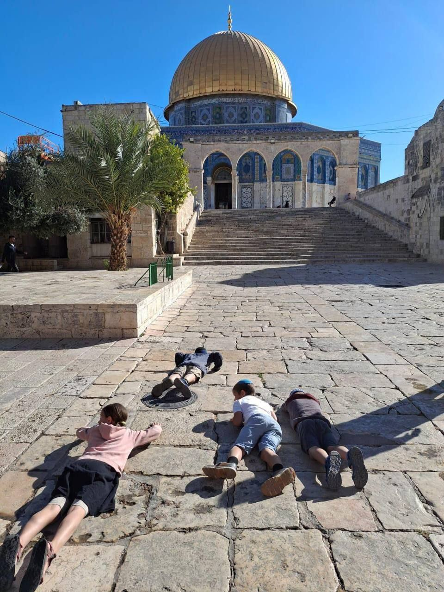

تحت حماية الشرطة: الجلوس الجماعي في الساحة الشرقية صار محطة ثابتة في مسار الاقتحام
رصدت كاميرا العاصمة المجموعات نفسها تجلس قرب باب الرحمة ثلاثة أسابيع متتالية، في وقت تمنع فيه الشرطة المصلين من الاقتراب.
الساحة الشرقيةتقرير مصورمحمد ع.

180 مستوطنااقتحموا الأقصى حتى العاشرة صباحا، بحسب رصد العاصمة
طقوس علنية في الساحة الشرقية بحماية مشددة، وقيود على أعمار المصلين عند أبواب البلدة القديمة.
المسجد الأقصىدعاء ك. ومحمد ع.6 دقائق قراءة
رصدت كاميرا العاصمة المجموعات نفسها تجلس قرب باب الرحمة ثلاثة أسابيع متتالية، في وقت تمنع فيه الشرطة المصلين من الاقتراب.
الساحة الشرقيةتقرير مصورمحمد ع.
المدينة مرسومة كما هي، وفي مركزها قبة الصخرة. كل دائرة مسافة حقيقية من الأقصى، وكل خبر مثبت في مكانه. اقترب حتى أبواب المسجد لترى حالتها الآن.
5,412 اقتحامادخول مسجل للمستوطنين إلى الأقصى، أعلى من أغسطس بنسبة 38٪
المصدر: رصد العاصمة الميداني
27 عملية هدممنشأة هدمت أو أجبر أصحابها على هدمها، 11 منها في سلوان
المصدر: رصد العاصمة
96 حالة اعتقالحالة اعتقال في المدينة، بينها 19 طفلا
المصدر المقترح: نادي الأسير
تتبعنا 1,100 اقتحام بالصور والتوقيت. المسار الذي كان يمر في دقائق صار وقوفا طويلا وطقوسا قرب السور الشرقي.
تحقيقرنا س. وفريق البيانات14 دقيقة قراءة

ما رأته كاميراتنا اليوم، بالترتيب الذي حدث فيه
التقسيم الزماني لم يعد مشروعا. صار جدولا يعلق على أبواب المسجد.
الخارجية الأردنية: الأوقاف الإسلامية صاحبة الولاية الحصرية على إدارة شؤون المسجد.
عمان